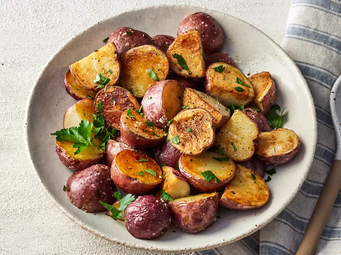

Roasted New Red Potatoes
Home

Ingredients
- 3 pounds small red new potatoes
- 1/4 cup olive oil
- 1 teaspoon salt and freshly ground black pepper
Steps
- Gather all ingredients. Preheat the oven to 400 degrees F (200 degrees C) and adjust the oven rack to the lowest position.
- Toss potatoes with oil, salt, and pepper in a bowl. Arrange, cut-side down, on a rimmed cookie sheet or jellyroll pan.
- Roast potatoes in the preheated oven until tender and golden brown, 20 to 30 minutes. Transfer to a serving dish.
- Serve